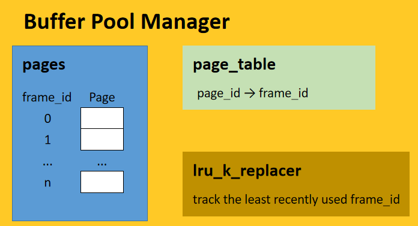

从这个 lab 起，就正式开始构建本课程 bustub DBMS 数据库系统了。
本项目要求我们实现存储管理器的 Buffer Pool 部分，即完善对物理页面进行调度的过程。Buffer Pool Manager 对上层公开一系列页面相关的 API，如获取页（FetchPage）、结束访问页（UnpinPage）等。上层根据 page_id 通过调用这些 API 从内存中获取相应数据。本项目的整体框架如下：

- pages：每个数组元素（即Page 对象）存放数据。模拟了实际内存对存储空间进行分页。
- page_table：存放
page_id到frame_id的映射。在本项目中，页表的设计基于可扩展哈希表。 - lru_k_replacer：不存储数据。仅当内存发生页面置换时，其根据 LRU-K 算法提供最先被换出的帧号。
基于上述讨论，可以开始进行 lab tasks 的构思了。
Task #1-Extendable Hash Table
具体概念请参考可扩展哈希实现。
由于今年不需要实现删除元素后哈希表的收缩，所以这里的关键部分就是桶满了之后的 Split 操作。若 Indexof(Key) = index 的键值对插入前对应桶满了：
增加对应桶 \(bucket_i\) 的 \(local\_depth\)；
如果此时 \(local\_depth\) 超过了 \(global\_ depth\)，则对目录进行扩展；
对所有指向桶 \(bucket_i\) 的索引，作一次数据的再分配；
若 \(bucket_i\) 原先的 \(local\_ depth\) 为 \(l\)，则指向该桶的所有索引的低 \(l\) 位都是一致的。当桶进行分裂时，第 \(l+1\) 位出现了差异，则令与
index的二进制表示中低 \(l\) 位相同，第 \(l+1\) 不同的索引指向新的桶 \(new\_bucket_i\)。取出 \(bucket_i\) 中所有键值对，对其重新插入。重复插入 Key 的操作直至不再分裂。
Task #2 - LRU-K Replacement Policy
在 LRU 策略中，每次页面置换都会选择最近最不常访问的帧号。其原理是符合直觉的。但是，考虑这种情况，存在某一热点页面，之后 buffer pool 发生了偶然性的冷页面的读取，根据 LRU 策略，热页面会被换出。但我们并不希望其被换出，因为这些冷页面可能在很长一段时间内仅仅只有此次访问。LRU 策略的缺点就在于，其不能跟踪某一页面是否为热点页面，我们希望读取的代价最小，也就是热点页面在大多数情况下都不会被置换出。
于是诞生了 LRU-K 策略。在本 lab 中，该策略是在原来的 LRU 基础上，新增维护了某一帧最近 K 次的访问记录，当需要置换页面时，replacer 会选出 \(k-distance\) 最大的那一帧。如果有多个 \(k-distance = inf\) 的帧，则换出最早被访问的那一个。
\(k-distance\)：与倒数第 \(k\) 次访问的时间差。若访问次数不足 \(k\) 次，则认为该值为 \(inf\)。
在 LRU-K 策略下，上述热点页的问题就能得到解决，即便发生了多个偶然性的冷页面访问，置换也仅仅发生在固定一帧，其余热点页面则会受到保护。
以上是对本 Task 核心部分的讨论，接下来是一些细节。
成员函数
Evict(frame_id_t *frame_id)：根据已有访问记录，挑选合适的 frame_id 进行置换，同时这里有个坑点，即选出一个 frame_id_t 后需清空其访问记录；RecordAccess(frame_id_t frame_id)：追加一条关于 frame_id 的访问记录；SetEvictable(frame_id_t frame_id, bool set_evictable)：设置 frame_id 的可置换性，即能否在 Evict 操作中参与 \(k-d\) 的比较；Remove(frame_id_t frame_id)：移除 frame_id 在 replacer 中的所有信息；
为了支持并发，需在上述所有函数中上锁。
成员变量设计
基于提供的成员函数，作出如下成员变量设计。
访问记录表
在 bustub 框架下，帧号永远从 0 开始，于是访问记录表可以不采用 unordered_map<frame_id_t, AccessRecord>，而是 std::vector<AccessRecord>。每个 AccessRecord 记录最近 K 次访问的时间戳。
在本 Task 中，我采用了 std::list<timestamp> 实现 AccessRecord。对于访问记录而言，只需维护 K 条记录，在追加记录时，若记录数已达 K 次，则移除最早的那次。显然，访问记录需要频繁的插入删除，以及末尾（倒数第 K 次记录）的访问，而 list 底层为一个双向链表，支持 \(O(1)\) 的增删查。
置换队列与队列位置信息
每次置换时，可以选择遍历一遍访问记录表，再取合适的帧进行置换，但这样每次置换的时间开销为 \(O(n)\)。不难想到可以定义一个“置换队列”，按照 \(k-dis\) 大小进行排序，使得队首恒为下一次进行置换的帧号，用空间换时间，将置换开销提升至 \(O(1)\)。
在本 Task 中，我依然采用了 std::list<frame_id_t> 来实现 replace_queue。在 replace_queue 中，只需访问队首元素，且需要频繁的插入删除——SetEvictable(true) 将本来 unevictable 的帧设为 evictable，需要将 frame_id 插入置换队列中合适的位置；SetEvictable(false) 将本来 evictable 的帧设为 unevictable，需要将 frame_id 从置换队列中移除。
这就导致插入/删除位置并不一定在首尾，查找插入/删除位置时需要进行 \(O(n)\) 遍历，为了减少这一开销，可以维护所有帧号在置换队列中的位置（迭代器），从而将开销降至 \(O(1)\)。
有了这一信息，就无需单独维护某个 frame_id 是否 evictable 了——若 frame_id 对应的迭代器为 replace_queue.end()，则认为其 unevictable，反之同理。
另外，若对一个 evictable 的帧进行 RecordAccess，则其访问记录会被修改，需改变其在 replace_queue 中的位置。
Task #3 - Buffer Pool Manager Instance
到这里，就需要我们整合前两个 Task 的内容，对内存中的页面进行管理了。
根据 lab guide 所述，BufferPoolManagerInstance 负责从 DiskManager 中获取页面并将它们存储在内存中，当它被明确指示这样做或者当它需要驱逐一个页面为新页面腾出空间时，它也可以将脏页写出到磁盘。系统中的所有内存页面都由 Page 对象表示。BufferPoolManagerInstance 不需要理解这些页面的内容。但作为系统开发人员，重要的是要了解 Page 对象只是缓冲池中内存的容器，因此并不特定于唯一页面。也就是说，每个 Page 对象都包含一个内存块，DiskManager 将使用这块内存存放从磁盘读取的物理页的内容的副本。
Page 类
Page 类维护以下元信息：
data_[]：实际的数据信息，下面三个并非真实页面所拥有的变量；page_id_：用于唯一标识当前 Page；pin_count_：表明当前访问该 Page 的线程数；is_dirty_：若数据被线程修改且未写回磁盘，则为 true。进行页面置换时，若被换出的页面的 is_dirty_ = true，则需写回磁盘；
成员变量
BPM 的成员变量无需额外设计，故研究一下其提供的变量。
std::atomic<page_id_t> next_page_id_：新建 Page 对象时赋予的 page_id，每次新建均自增；Page *pages_：Page 对象数组，即帧，根据 frame_id 作为下标进行访问，相当于一个容器，只是存放实际存储中的一个副本；ExtendibleHashTable<page_id_t, frame_id_t> *page_table_：哈希表，存放 page_id 到 frame_id 的映射，每次对 pages 数组进行修改时，都要对该变量进行操作；std::list<frame_id_t> free_list_：跟踪未存放任何 Page 对象的帧，当从磁盘中取出页面时优先使用 free_list 中的帧；
成员函数
NewPgImp(page_id_t *page_id)：新建一个 Page，并将其插入到帧中，插入时优先使用 free_list 中的帧，其次再考虑利用 replacer 挑选一帧进行页面置换，置换时若页面为脏，则需写回磁盘。之后，除了修改 Page 对象的元信息，还需修改哈希表，构建新的映射；FetchPgImp(page_id_t page_id)：表明某一线程需要访问 Page。如果 BPM 中已经有该 Page，则直接访问；反之，从磁盘中读取 Page，执行和 NewPgImp 一样的插入 Page 操作。这里访问 Page 实际上也是访问帧，Page 层面的就是修改pin_count_变量，而对于帧层面的，除了要调用RecordAccess()函数追加访问记录，还要将该帧设为 unevictable；UnpinPgImp(page_id_t page_id, bool is_dirty)：表明某一线程终止了对该 Page 的访问。若该 Page 并不在 BPM 中，直接返回。减少pin_count_后，若其降至 0，则表明无任何线程正在访问，可以参与到页面替换的评比之中，需将对应帧设置为 evictable；这里有一个坑点在于，仅当
is_dirty = true时才修改 BPM 中对应 Page 对象的is_dirty_变量，这是因为其为true时必定代表对该 Page 进行了修改，而为false仅仅表明这一线程只读不写，不代表其它线程没有对其进行操作，故不能不加判断直接修改。FlushPgImp(page_id_t page_id)：无条件将对应 Page 的内容写回磁盘；FlushAllPgsImp()：对所有 Page 执行一次FlushPgImp操作；DeletePgImp(page_id_t page_id)：删除 page_id 对应的 Page 的所有信息。如果该 Page 不在帧中，则直接返回，否则，判断对应 Page 对象是否仍有线程在访问，若有，则直接返回，反之需修改所有与该 Page 对象及所在帧相关的信息，无需考虑磁盘中的情况，next_page_id_也不会随之变化；就是在这里调用 replacer 的
Remove()函数了。
总结
总体实现并不难，跟着注释以及 lab guide 一步步来即可。
善用框架提供的 BUSTUB_ASSERT 进行防御性编程，以便 DEBUG 时针对性地检测异常。
并发所采用的 std::scope_lock 实际上采用了 RAII 的思想，简单来说就是利用类析构函数的特性来保证退出函数时必定能够释放锁，而无需手动释放，效果相当于 Go 里面的 lock, defer unlock。